Secret Identity
Enterprise Software Development, Fall 2026
Name: Syed Hamza Omer
Student ID: 08962
This is the same DC guessing game from Assignment 1. Players still try to name the secret character in eight guesses. This round I cleaned up the HTTP API, added a gRPC twin of the same game logic, and filled the metric gaps that showed up once a second protocol was in the mix.
docker compose up -d --build
| What | Where |
|---|---|
| Game UI | http://localhost:8000 |
| OpenAPI / Swagger | http://localhost:8000/api/docs |
| Spec file | http://localhost:8000/openapi.yaml |
| gRPC | localhost:50051 |
| gRPC metrics | http://localhost:9091/metrics |
| Prometheus targets | http://localhost:9090/targets |
| Grafana | http://localhost:3000 (admin / admin) |
python scripts/test_http_api.py
python scripts/test_rate_limit.py
python scripts/http_caller.py
python scripts/grpc_caller.py 5
| Method | Route | Inputs | Success / errors | Notes |
|---|---|---|---|---|
GET |
/api/health |
— | 200 |
Liveness check. Unchanged from A1. |
GET |
/api/characters |
— | 200 |
43 names. Read-only, so repeats are already safe. |
POST |
/api/games |
optional Idempotency-Key |
201 new, 200 replay |
Same key returns the same game_id. |
POST |
/api/games/{gameId}/guesses |
body {"name":"..."}, optional Idempotency-Key |
200, 400, 404, 409, 429 |
Main change this assignment. |
POST |
/api/games/{gameId}/guess |
same | same | A1 alias so old callers still work. |
GET |
/api/games/{gameId} |
path id | 200, 404 |
Status, guesses used, turns left. |
GET |
/openapi.yaml |
— | 200 |
The spec itself. |
GET |
/api/docs |
— | 200 |
Swagger UI over that spec. |
GET |
/metrics |
— | 200 |
HTTP Prometheus scrape. |
POST |
/chaos/delay, /chaos/reset |
query every, ms |
200, 400 |
Used to force timeouts for the caller demo. Left as lab tools. |
Chaos, /metrics, and /api/demo/hit are A1 leftovers. I did not redesign them.
openapi.yaml is an OpenAPI 3.0.3 document for the HTTP routes above: path params, JSON bodies, success payloads, and the error codes I actually return (400, 404, 409, 429). The app serves that file at /openapi.yaml and loads it in Swagger UI at /api/docs, so I can click an operation instead of reconstructing curl by hand. I used it to try POST /api/games/{gameId}/guesses in the browser — fill gameId, send {"name":"Batman"}, and read the clue object plus the Idempotent-Replayed / rate-limit headers.
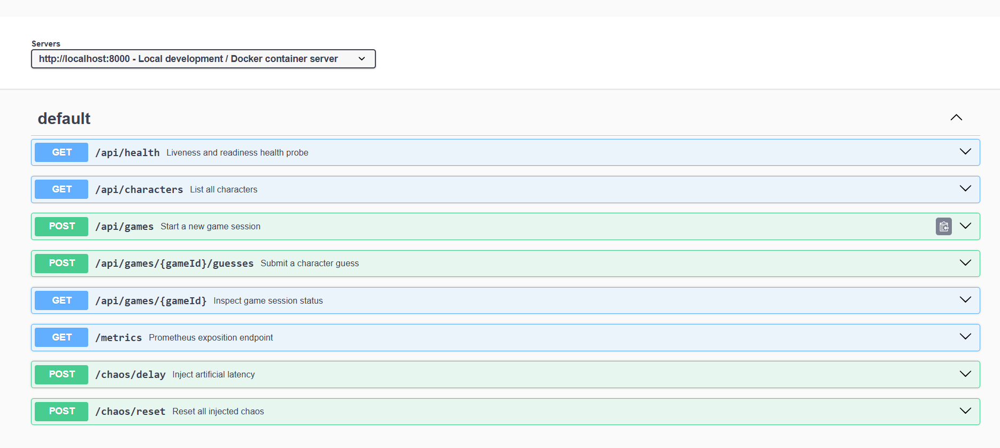
Figure 1. Swagger UI at /api/docs, generated from openapi.yaml.
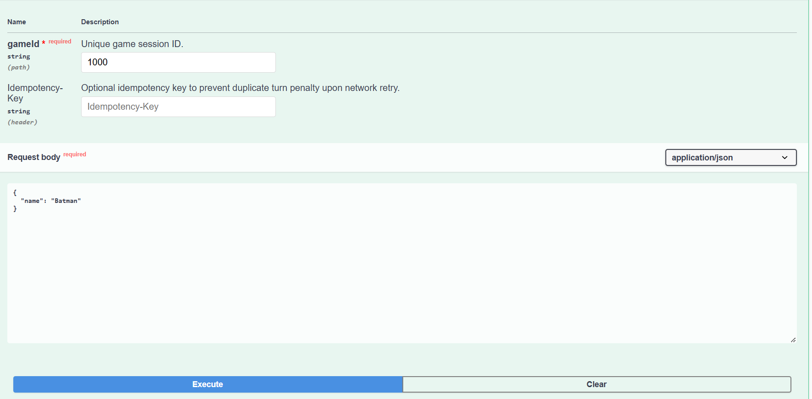
Figure 2. Trying a guess from the spec. Idempotency-Key is an optional header on the same operation.
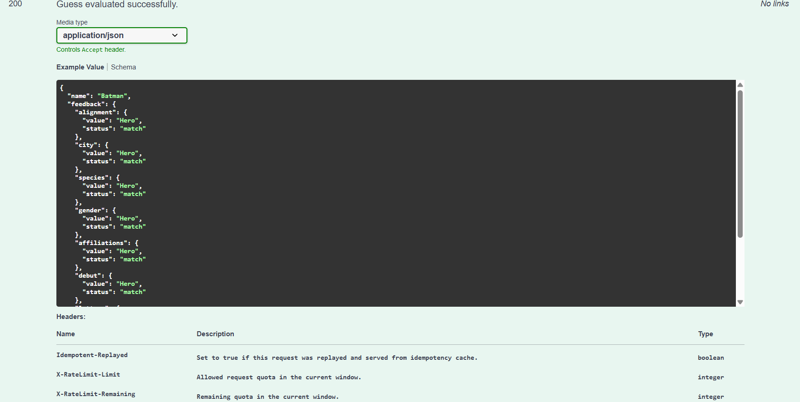
Figure 3. Live 200 from that try-it call. The spec also documents Idempotent-Replayed and the X-RateLimit-* headers.
The user task I picked is submit a character guess in an active game.
| Assignment 1 | Assignment 2 | |
|---|---|---|
| Old / new endpoint | POST /api/games/:gameId/guess |
POST /api/games/:gameId/guesses (legacy /guess still mapped) |
| Problem | Singular URI; a dropped response plus a retry looked like a second guess (400 You already guessed that character); no throttle, so a script could burn through the 43-name roster. |
Collection URI; Idempotency-Key replays cached feedback and does not spend a turn; 5 calls / 10s per IP, then 429 + Retry-After. |
| Change | One POST that always mutated. | Same judging code, plus a key cache, a sliding window, and headers that tell the caller what happened. |
| Reason | Guesses are the write that actually costs a turn. That is the call a flaky client will retry, and the one worth rate-limiting. |
Other endpoints
POST /api/games — also takes Idempotency-Key. A retry should not spawn a second secret.GET /api/games/:gameId — added so you can inspect a session without guessing.GET /api/characters, GET /api/health — left alone. GETs with no body./chaos/*, /metrics, /api/demo/hit — left alone. Lab / A1 surfaces.Callers I had to touch
app/static/index.html) now posts to /guesses and sends a UUID Idempotency-Key on start-game and guess.scripts/load.js hits /guesses and treats 200/201 as success.scripts/http_caller.py (below).POST /api/games and POST /api/games/:id/guesses are the retries that would duplicate work.
The client sends Idempotency-Key. The engine stores the response against that key (app/game-engine.js). The next POST with the same key returns the cached body and Idempotent-Replayed: true. Guesses_left does not drop.
Repeating the same character name in one session is also treated as a replay even without a key, because that used to be the exact A1 failure mode after a timeout.
429 Too Many Requests with Retry-After set to how many seconds until the oldest stamp in the window ages out. X-RateLimit-Limit, X-RateLimit-Remaining, and X-RateLimit-Reset go out on both allowed and blocked responses.I ran this separately from the circuit-breaker demo, as asked (python scripts/test_rate_limit.py).
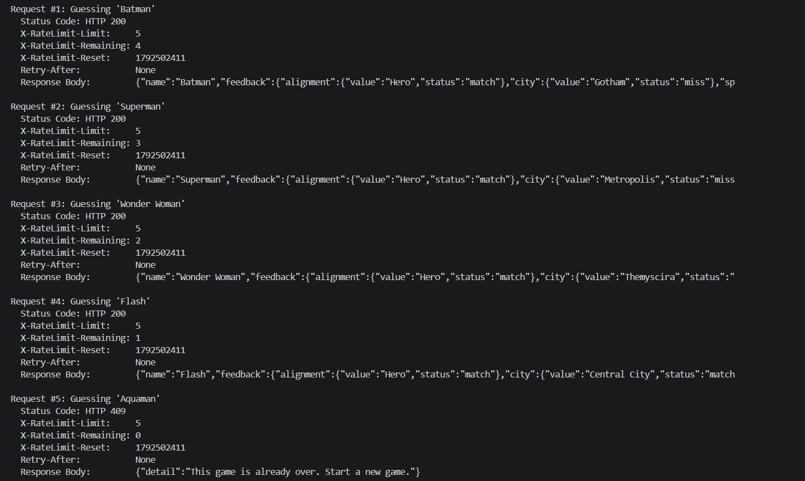
Figure 4. Accepted guesses on POST /api/games/{id}/guesses. Remaining quota counts down. Request 5 landed on a finished game (409) after a lucky correct guess, so the remaining counter is already 0; the next burst is what Grafana records as 429 (Figure 11).
The automated API suite also hit the cap while checking the /guess alias and waited on Retry-After (~10.5s) before continuing:
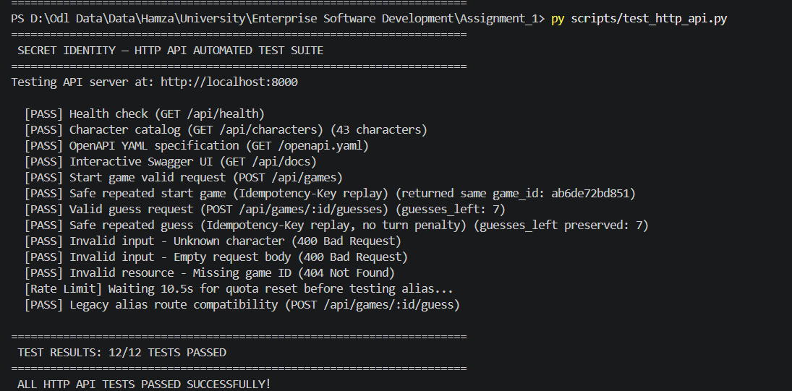
Figure 5. Valid request, invalid input (400 unknown character, empty body, 404 missing game), and a repeated start/guess with the same key. The “Waiting 10.5s” line is the 429 path.
| Case | What I sent | Result |
|---|---|---|
| Valid | POST /api/games, then guess Batman |
201 / 200, clues, guesses_left 7 |
| Invalid | Thanos-Marvel, empty body, fake game id |
400, 400, 404 |
| Repeat | same Idempotency-Key on start and on guess |
same game_id; guess replayed; guesses_left unchanged |
scripts/http_caller.py is a client, not another server. One run makes several calls with:
| Setting | Value |
|---|---|
| Timeout | 1.0 s per attempt |
| Retries | 3 extra attempts on timeout / connection error / HTTP 5xx |
| Backoff | 0.2 s, 0.4 s, 0.8 s |
| Breaker trip | 3 consecutive exhausted calls |
| Recovery | 3.0 s closed-to-traffic, then one HALF_OPEN probe |
Retries reuse the same Idempotency-Key, so a late server response cannot spend extra turns.
I did not use rate limiting for this demo. Timeouts come from POST /chaos/delay?every=1&ms=2000 (2 s delay vs 1 s timeout).
Phase 1 — success, breaker CLOSED
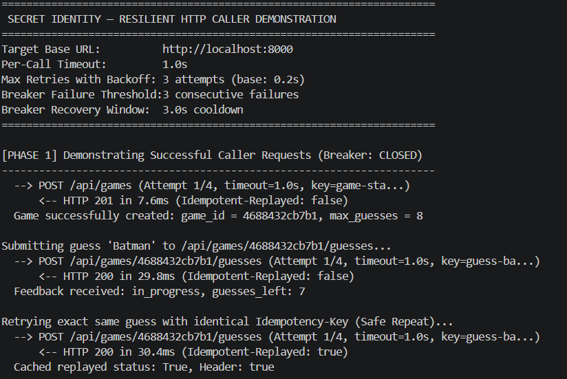
Figure 6. Happy path. The repeated guess is served from cache (Idempotent-Replayed: true). Timeout and breaker settings are printed at the top.
Phase 2 — timeout, backoff, trip to OPEN
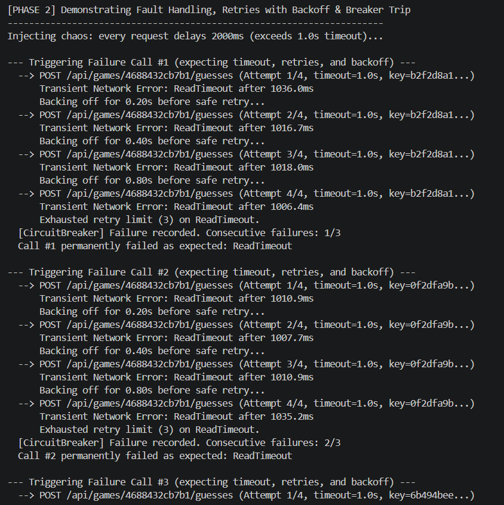
Figure 7. Three logical calls, each with retries. Consecutive failures 1/3, 2/3, then trip.
Phase 3 — block while OPEN; Phase 4 starts recovery
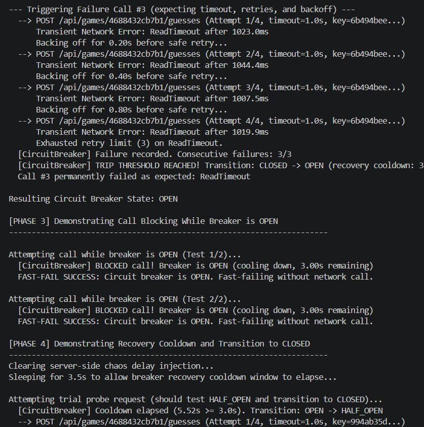
Figure 8. While OPEN the caller refuses work locally. After cooldown it will probe once.
Phase 4 — HALF_OPEN probe, back to CLOSED
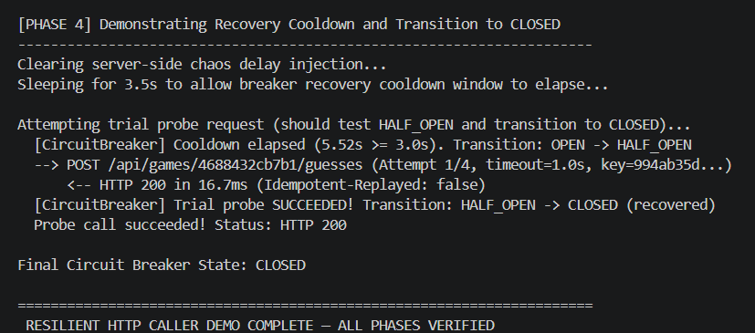
Figure 9. Probe succeeds, breaker closes. All four phases in one run.
I did not redo the A1 “four metric types” exercise. This is only an audit of what that HTTP setup could not see once gRPC existed.
| A1 | A2 | |
|---|---|---|
| Still useful | http_requests_total, http_request_duration_seconds, games_active, win/loss counters |
Left in place. Old Grafana boards still work. |
| Missing | No RPC method/status, no 429 counter, no replay counter, no in-flight view, no payload size | Added on the gRPC registry (:9091) and two HTTP counters |
| Fix / add | — | grpc_server_handled_total, grpc_server_handling_seconds, grpc_server_in_flight_requests, message-size histograms, plus http_rate_limit_hits_total / *_idempotency_hits_total |
.protoproto/game.proto defines SecretIdentityService with GetCharacters, StartGame, MakeGuess, and GetGameStatus. HTTP and gRPC share app/game-engine.js, so a guess is judged once.
Generate Python stubs:
python -m grpc_tools.protoc -I. --python_out=. --grpc_python_out=. proto/game.proto
That writes proto/game_pb2.py and proto/game_pb2_grpc.py. scripts/grpc_caller.py uses those stubs. It is the Python gRPC client; it does not expose Prometheus (not required).
Five cycles of mixed OK / INVALID_ARGUMENT / NOT_FOUND calls populate the boards:
python scripts/grpc_caller.py 5
prometheus/prometheus.yml has a second job:
- job_name: secret-identity-grpc
static_configs:
- targets: ["app:9091"]
HTTP stays on app:8000. Both were UP:
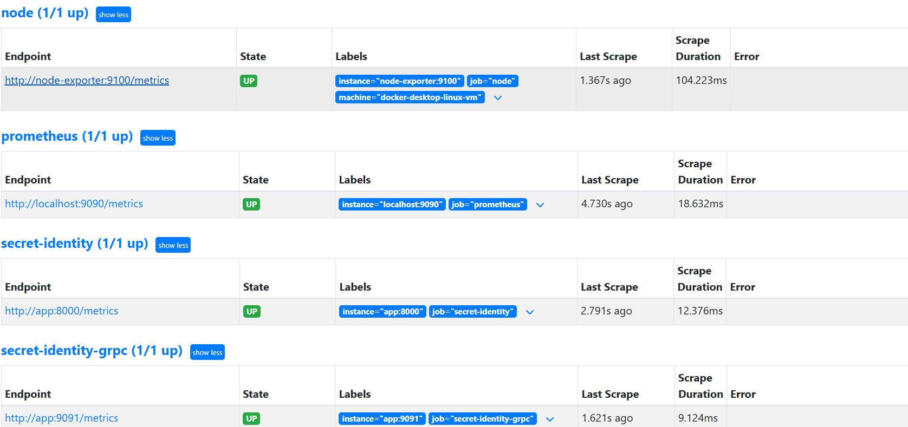
Figure 10. Prometheus scraping the HTTP app and the gRPC metrics process.
Duration is measured on the server, inside measureAndExecute in app/grpc-server.js, around the handler. That is handler time, not client RTT.
I used in-flight calls as the saturation signal (grpc_server_in_flight_requests). If calls sit in the process, this gauge moves; a lone latency quantile can hide that. I still recorded message size because GetCharacters is obviously larger than MakeGuess, and the brief allows either metric.
Labels stay small: service name, four method names, a handful of gRPC codes, HTTP route templates. No user, game, request, or trace ids on series.
| Metric | Purpose | Type | Unit | Labels | Code | Query |
|---|---|---|---|---|---|---|
grpc_server_handled_total |
Volume and errors by method/status | counter | calls | grpc_service, grpc_method, grpc_code |
app/grpc-metrics.js, incremented in app/grpc-server.js |
sum by (grpc_method, grpc_code) (rate(grpc_server_handled_total[1m])) |
grpc_server_handling_seconds |
Latency histogram (p50 / p95) | histogram | seconds | grpc_service, grpc_method |
same | histogram_quantile(0.95, sum by (le, grpc_method) (rate(grpc_server_handling_seconds_bucket[5m]))) |
grpc_server_in_flight_requests |
Concurrent RPCs | gauge | requests | grpc_service, grpc_method |
inc/dec around each handler | sum by (grpc_method) (grpc_server_in_flight_requests) |
grpc_server_msg_received_bytes / _sent_bytes |
Payload size | histogram | bytes | grpc_service, grpc_method |
same wrapper | histogram_quantile(0.95, sum by (le, grpc_method) (rate(grpc_server_msg_sent_bytes_bucket[5m]))) |
grpc_idempotency_hits_total |
Replays on the gRPC path | counter | hits | grpc_service, grpc_method |
StartGame / MakeGuess |
sum by (grpc_method) (rate(grpc_idempotency_hits_total[1m])) |
http_rate_limit_hits_total |
HTTP 429s |
counter | hits | route |
app/server.js checkRateLimit |
sum by (route) (rate(http_rate_limit_hits_total[1m])) |
http_idempotency_hits_total |
HTTP replays | counter | hits | route |
guess / start handlers | sum by (route) (rate(http_idempotency_hits_total[1m])) |
Histogram buckets for RPC time: 0.001 … 2.5 seconds. Message size: 32 … 4096 bytes.
Grafana dashboard grafana/dashboards/secret-identity-grpc-comparison.json, time window on the panels: 5 minutes for quantiles, 1 minute for rates.
Calls and errors, side by side
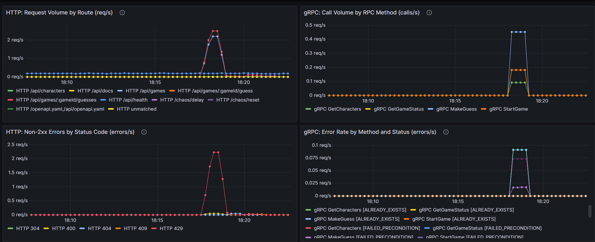
Figure 11. Left: HTTP. Right: gRPC. The HTTP error panel is the 429 spike from the rate-limit run. gRPC errors are the expected INVALID_ARGUMENT / NOT_FOUND / FAILED_PRECONDITION calls from grpc_caller.py.
Duration p50 / p95, 429s, in-flight
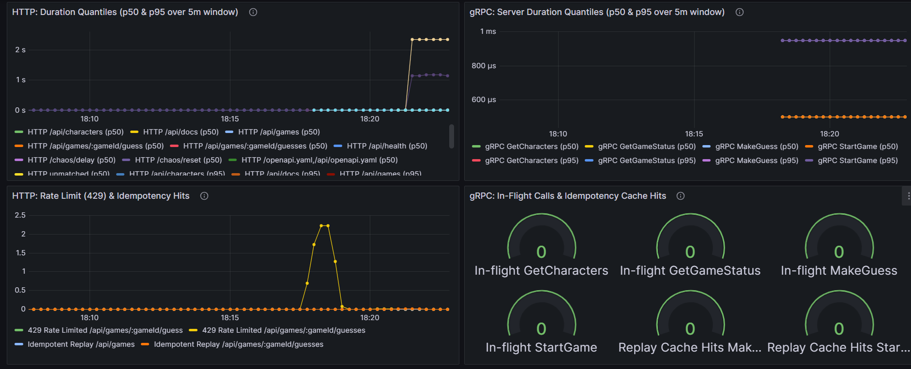
Figure 12. p50 and p95 over a 5 minute window. The ~2 s HTTP bump is the chaos delay used for the breaker demo, not normal guess time. gRPC handler p95 stays under a millisecond here. Bottom-left is the 429 / replay series; bottom-right is in-flight (idle after the burst) plus replay hits.
Message size (extra panel)
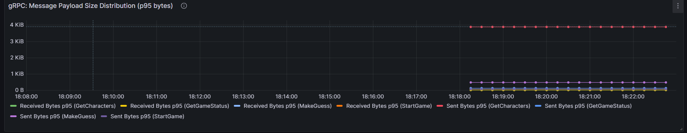
Figure 13. GetCharacters responses sit near 4 KiB; StartGame / MakeGuess stay tiny. That is why I kept size as a second panel even though in-flight is the saturation metric I would actually alert on.
Browser or python scripts/http_caller.py
| HTTP :8000
v
Express -> rate limit (guesses) -> idempotency cache -> game engine
|
+-> /metrics Prometheus job secret-identity
+-> /chaos/delay (timeout demo only)
python scripts/grpc_caller.py
| gRPC :50051
v
SecretIdentityService -> same game engine
|
+-> metrics HTTP :9091 Prometheus job secret-identity-grpc
Prometheus -> Grafana (HTTP panels | gRPC panels)
Both protocols end in the same in-memory map. HTTP adds the IP window and Swagger. gRPC adds protobuf status codes and its own registry so a scrape of :8000 cannot clobber RPC series.
HTTP:
POST /api/games/4688432cb7b1/guesses HTTP/1.1
Content-Type: application/json
Idempotency-Key: guess-batman-77a8b12c
{"name":"Batman"}
JSON body with seven clue objects, status, guesses_left. Roughly a few hundred bytes.
gRPC:
MakeGuess(game_id="4688432cb7b1", character_name="Batman", idempotency_key="grpc-guess-…")
→ status OK, feedback fields, guesses_left
Same clues, typed fields, smaller on the wire. Failures are INVALID_ARGUMENT / NOT_FOUND instead of HTTP 400 / 404.
429 and Retry-After.I reused the A1 app, dashboards, and chaos endpoints. New work is the spec, /guesses, keys, limiter, Python callers, proto + gRPC server, gRPC registry, and the comparison dashboard.
Run commands live in README.md. Data volumes are gitignored (esdata/, prometheus-data/, etc.).